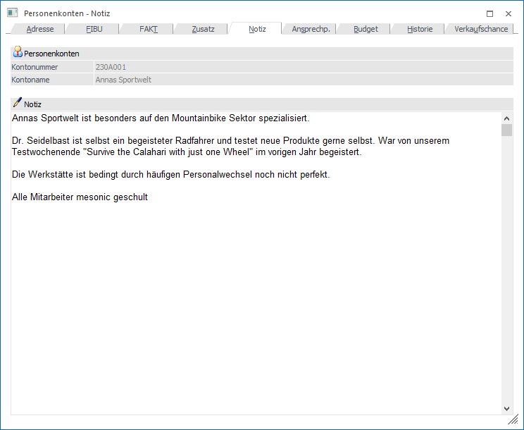
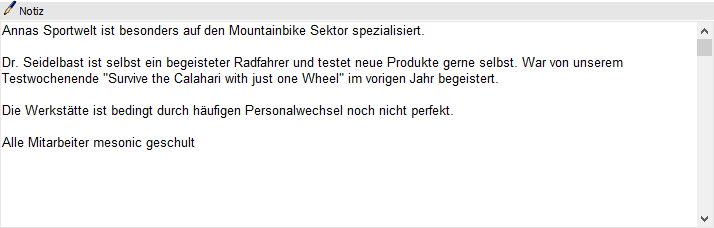

In dem Register "Notiz" des Personenkontenstamms kann eine Zusatzinformation in Form eines Notizblockes hinterlegt werden (formatierbarer Fließtext).

Folgende Eingabefelder, Einstellungen und Informationen stehen zur Verfügung:
Personenkonten

Ø Kontonummer
An dieser Stelle wird die Kontonummer des ausgewählten Personenkontos angezeigt.
Ø Kontoname
Hier wird der Kontoname des aktuell gewählten Kontos dargestellt.
Notiz

Ø Notiz
In das RTF-Text-Feld kann ein Text zu dem Personenkonto hinterlegt werden. Sobald der Fokus in das Feld gelegt wird, können über den Ribbon "TEXTFORMATIERUNG UND TOOLS" Textformatierungen vorgenommen werden (nähere Informationen entnehmen Sie bitte dem Kapitel "Textformatierung und Tools Ribbon" im WinLine Allgemein Handbuch).